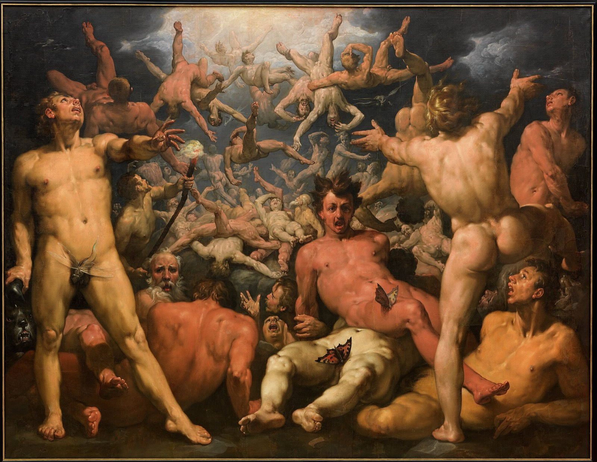

asura · the jealous gods
the titan realm
"Better to reign in Hell, then serve in Heav'n." — Milton's Satan, Paradise Lost, Book I

the shape of the trap
The dominant characteristic of the next realm, the jealous god or asura realm, is paranoia. If you are trying to help someone who has an asura mentality, they interpret your action as an attempt to oppress them or infiltrate their territory.
— Chögyam Trungpa, The Myth of Freedom
In his constant struggle to achieve perfection of some sort, the monkey becomes obsessed with measuring his progress, with comparing himself to others.
— Chögyam Trungpa, Cutting Through Spiritual Materialism
… the titan realm concerned with envy for what others have, with a sense of frustrated entitlement, and with constant struggle …
— Martin Lowenthal & Lar Short, Opening the Heart of Compassion
In the titan realm, the sense of deficiency is projected inwardly. That is, it's not that the world isn't providing enough, it's that I am not enough.
— Ken McLeod, Then and Now
When we live in the titan realm, we want to prove that we deserve to be respected, to be honored, to be loved, to be secure, and to be treated justly.
— Martin Lowenthal & Lar Short, Opening the Heart of Compassion
texture
nine words
the titan credo — attributed to Gore Vidal, 1973
Whenever a friend succeeds, a little something in me dies.
— attribution history at Quote Investigator
film
Amadeus — dir. Miloš Forman, 1984
Mediocrities everywhere... I absolve you... I absolve you all.
— Salieri
film
The Social Network — dir. David Fincher, 2010
If you guys were the inventors of Facebook, you'd have invented Facebook.
— Mark Zuckerberg (Jesse Eisenberg), screenplay by Aaron Sorkin
tv
Succession — Jesse Armstrong
I love you, but you are not serious people.
— Logan Roy
essay
Consolations: "Ambition" — David Whyte
Ambition is desire frozen, the current of a vocational life immobilised and over-concretised to set unforgiving goals.
— davidwhyte.substack.com
song
Everybody Knows — Leonard Cohen, 1988
dispatches
From @RomeoStevens76, via the community archive.
If you think you aren't subject to this stuff bc no big loud experiences around it, I'll say that pride is usually the biggest reason we can't give and receive as much help as we could otherwise, and pride is a main character trait of demon realm. We all have some to work on.
In the demon realm, signs pointing towards the exits are assumed to be tricks.
the door
Out beyond ideas of wrongdoing and rightdoing there is a field. I'll meet you there.
— Rumi, A Great Wagon (trans. Coleman Barks)
The wisdom of coordinating with others for things beyond you along with shared defense of shared values and calling the callous to task. The beauty of being called to your best self by competition all resides in the titan realm.
even here, a buddha
In the titan realm the awakened one is called Vemachitra, and he carries a sword — the blade of discrimination, which cuts envy at the root by cutting the comparison itself.
The gates are not locked.
☸ the six realms · may all beings be free